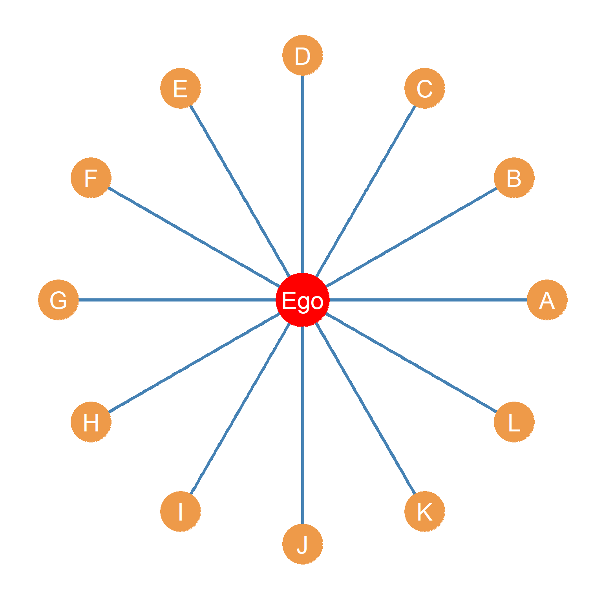
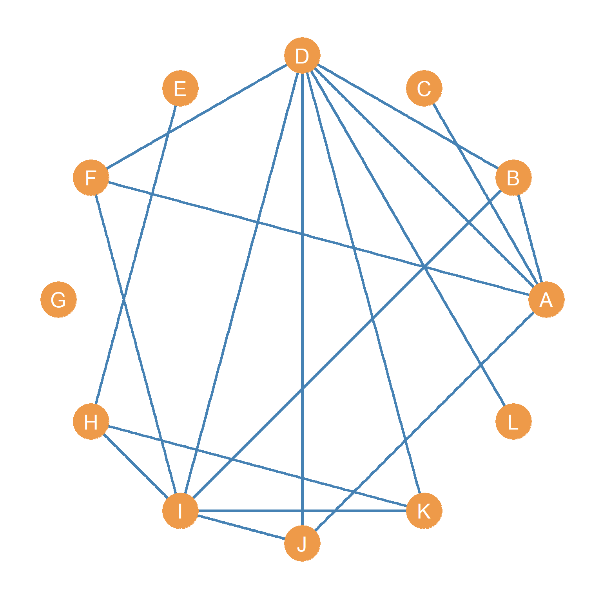
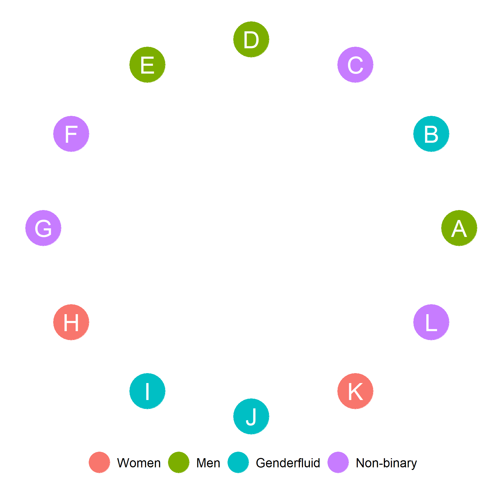
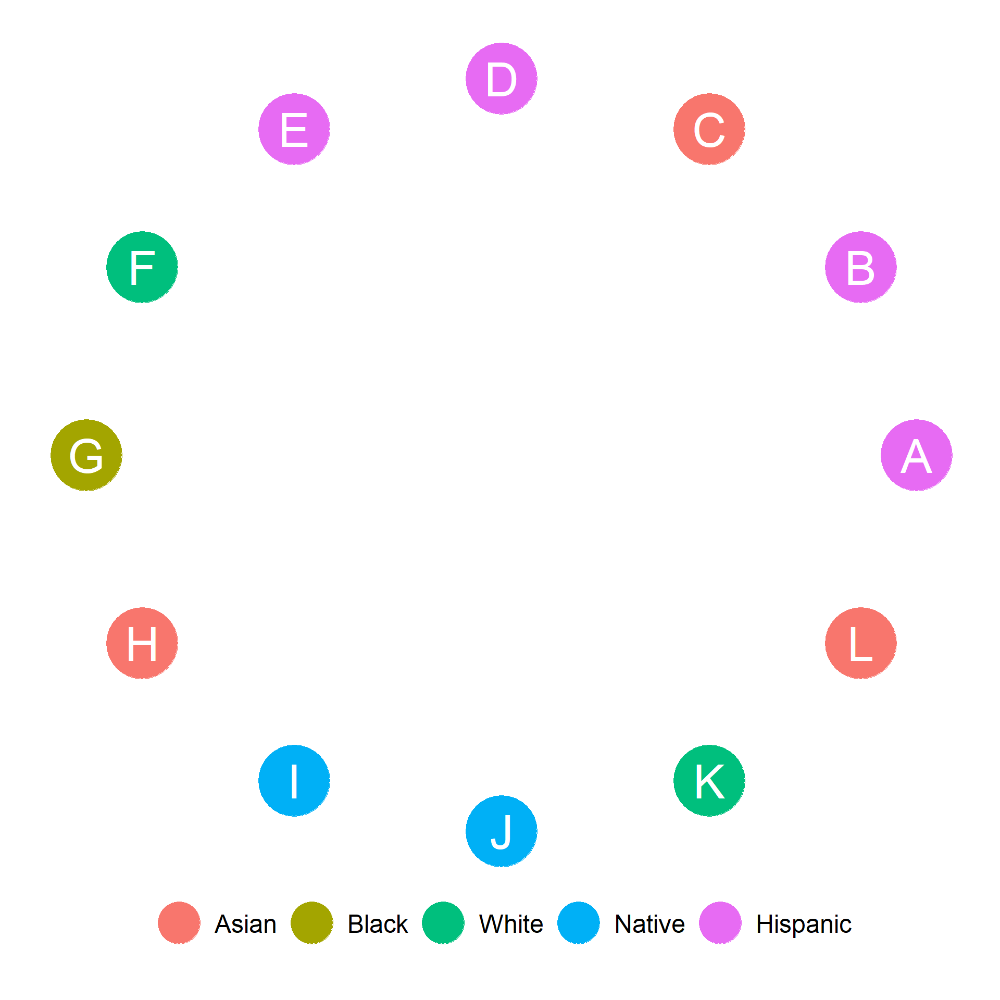
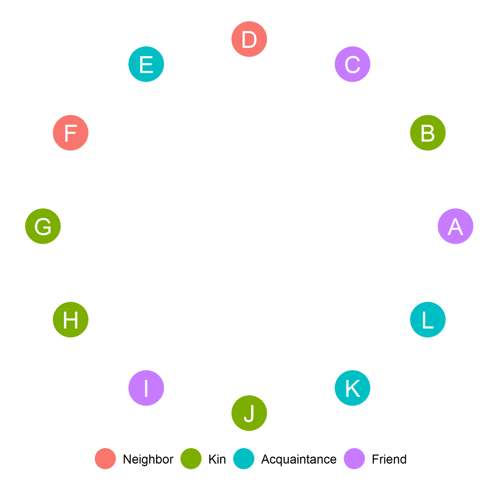
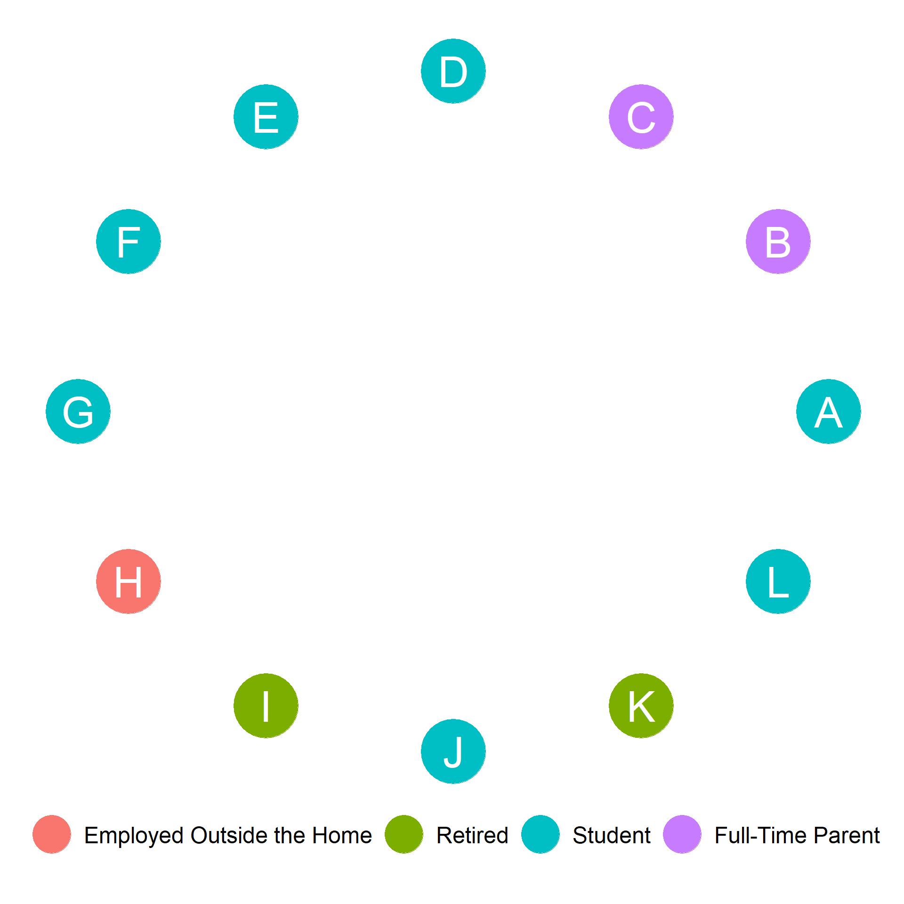

Homework VI: Ego-Network Metrics


Consider Figure 1(a). This shows the ego-to-alter ties in a hypothetical ego-network.
Consider Figure 1(b). This shows the alter-to-alter ties in the hypothetical ego-network shown in Figure 1(a).
What is the size of ego’s network?
What is ego’s clustering coefficient?




Figure 2-Figure 5 show some sociodemographic and role-relational characteristics of alters in ego’s network. Ego is a UCLA student who identifies as Hispanic and as a Man. Using this information:
Compute Ego’s homophily with respect to gender identity.
Compute Ego’s homophily with respect to Ethnoracial identification.
Compute the proportion kin in Ego’s network.
Compute the proportion non-Hispanic in Ego’s network.
Compute the proportion of individuals employed outside the home in Ego’s network.
Compute the diversity of Ego’s Network with respect to ethnoracial identity.
Compute the diversity of Ego’s Network with respect to employment status.
Compute the diversity of Ego’s Network with respect to gender identity.
Compute the proportion of fellow students in Ego’s network.
Does ego have a stronger same-group preference with respect to race than with respect to gender? (Yes/No)
Is the diversity of ego’s network larger when it comes to race than when it comes to employment status (Yes/No)
What is the proportion of ego’s network composed of kin who are also full-time parents?
Compute the proportion of people who identify as Men or Women in ego’s network.
Draw the subgraph of Ego’s alter-to-alter ties that is only composed of students